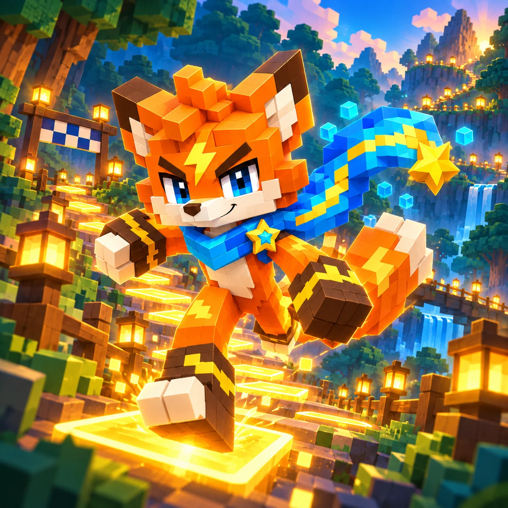

Lantern Stride

Alternate your steps and find your rhythm on a forest racecourse.
Stage 1 / 60
Game Guide
Alternate steps, adapt your rhythm and finish each forest course.
Goal
Reach the finish and meet the stage goal.
How to play
Alternate left and right steps. Read the surface and adjust your rhythm.
Controls and rules
Tap the two step buttons, or use A and D. Repeated or rushed steps reduce balance.
Finishing and feedback
Clearing a stage saves the next stage. Retry to improve your time.
Strategy
Watch the timing cue as surfaces change. Slow sections need longer gaps; fast sections need shorter ones. Gates require the marked foot, and bridges accept steps while lit. At a gate or fork, the first choice may repeat your previous foot without a repeat-foot penalty. Twelve steady steps grant a speed boost until a mistake.
Each race has a distance, a balance meter and a countdown at the top of the screen. Begin with either foot, then alternate left and right using the buttons or A and D. Watch the timing message before each step: it changes from waiting to a prompt to step, and tells you if the next step is late. If your rhythm feels rushed, wait for the cue instead of tapping repeatedly. A clean sequence builds speed and gradually restores balance; a repeated foot or mistimed step reduces balance. When balance runs out, Fia stumbles and can recover, but a stumble affects the optional star for a clean run.
The surface ahead changes the rhythm you need. On slow ground, leave a longer gap between steps; on fast ground, shorten it. The route strip can announce the next section before you reach it, so use that warning to prepare. Wind changes your movement: a headwind holds you back, while a tailwind helps you move faster. At a marked foot gate, use the indicated foot for the entry. A wrong gate ends the race and lets you retry. At a fork, the first foot selects the corresponding side; read the choice before stepping. That first decision at a gate or fork may repeat your previous foot without a repeat-foot penalty. In the second chapter, step on a bridge while its light is on. Waiting for the light is allowed; the feather can briefly hold it open once per race.
A clear awards a star and unlocks the next stage after the result is saved. Two optional stars reward finishing within the displayed time target and completing the race without a stumble. You can advance with fewer than three stars, then return later to improve. The stage information shows the target and, after a saved clear, your personal best time. A slower replay does not erase a faster best or reduce previously earned stars. Clearing stages 5 and 15 unlocks Steady and Swift shoes for free. Steady softens mistakes but accelerates more slowly; Swift accelerates and runs faster but makes mistakes more costly. Equip a shoe in the preparation screen and wait for its save confirmation. The first clear also grants its listed reward; replaying does not repeatedly grant that first-clear reward. Use the back button to pause and choose whether to continue or leave. Progress and equipment belong to this browser, so keep the page open and retry if saving fails.
Progression
Clear stages 5 and 15 to unlock free shoes with different acceleration and penalty tradeoffs. From stage 31, one feather per race can hold a bridge open briefly.
Saving
Stage records and equipment are stored in this browser. Keep this page open to retry a failed save; clearing site data can remove progress.
Frequently asked questions
How do I get the other shoes?
Clear stage 5 for Steady shoes and stage 15 for Swift shoes, then equip them in Shoes.
Does the star trail make me faster?
No. It is a permanent visual appearance and does not change speed.
Where is my progress saved?
Progress is saved in this browser. Clearing site data or using another browser can remove access to it.